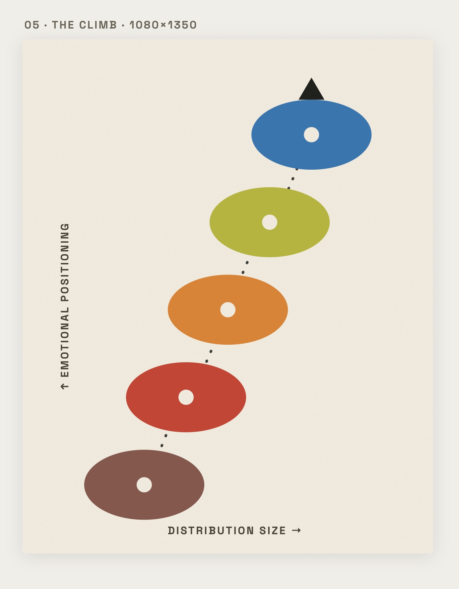
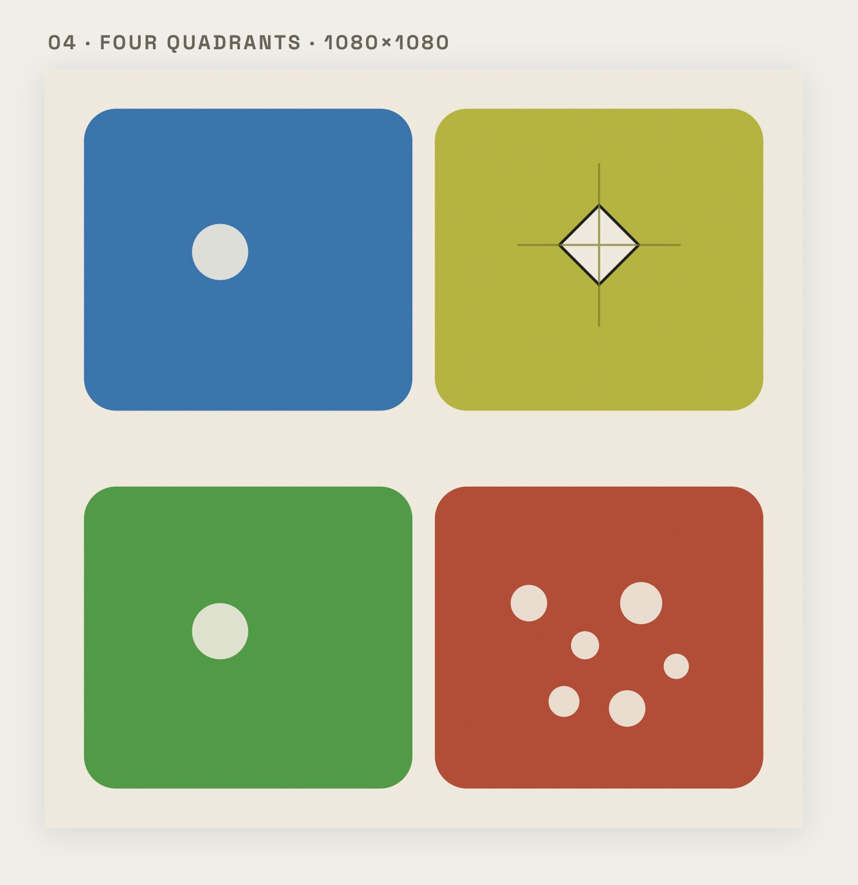
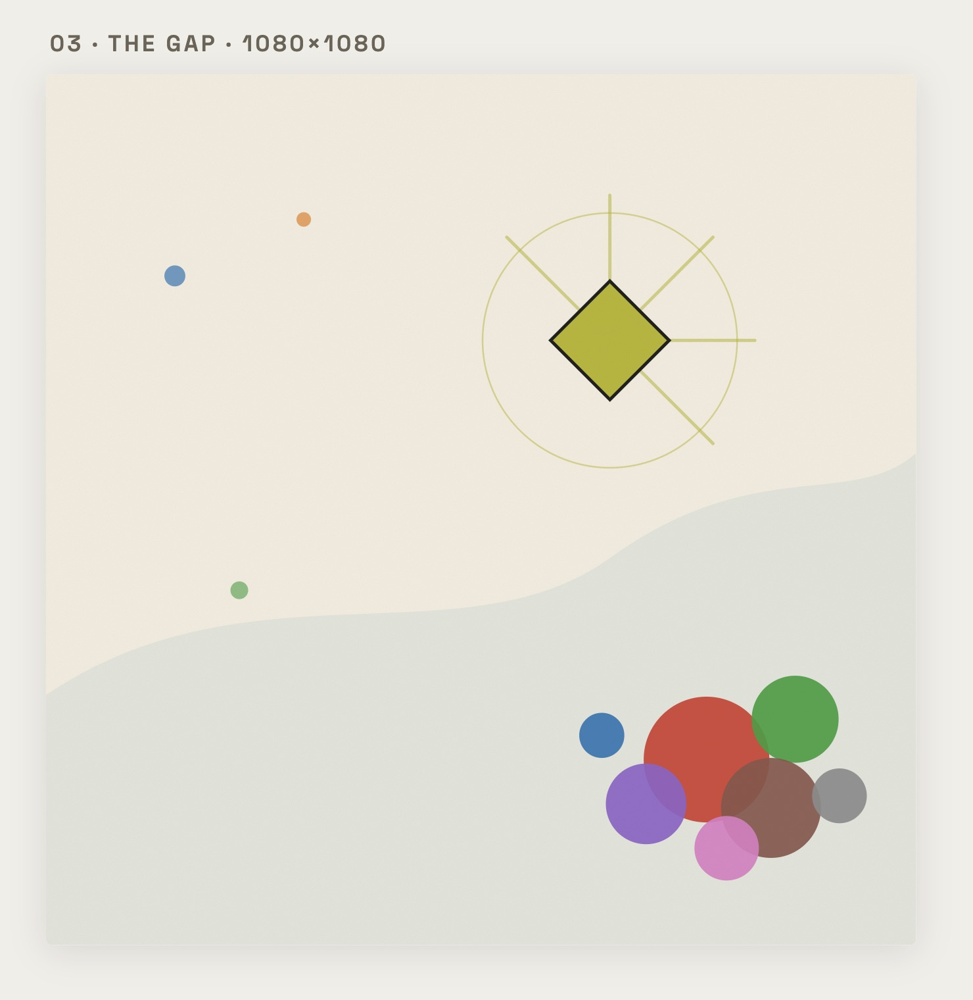
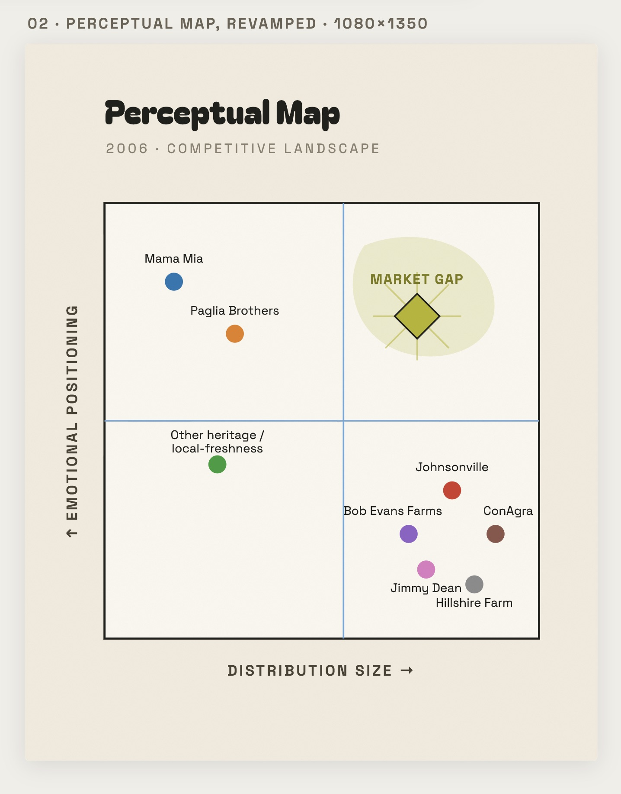
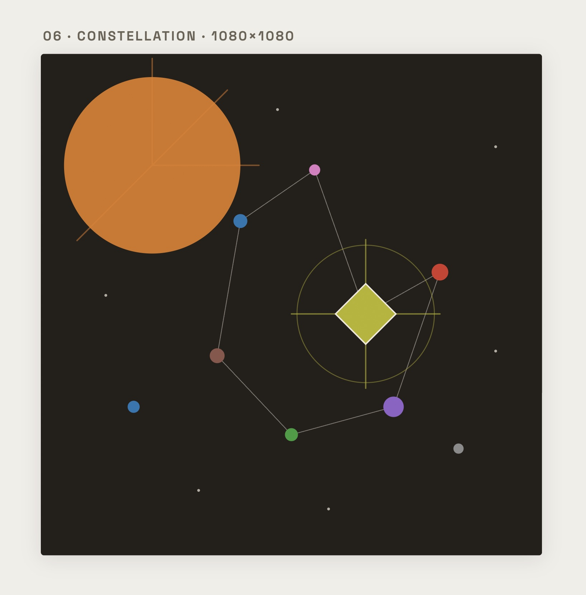
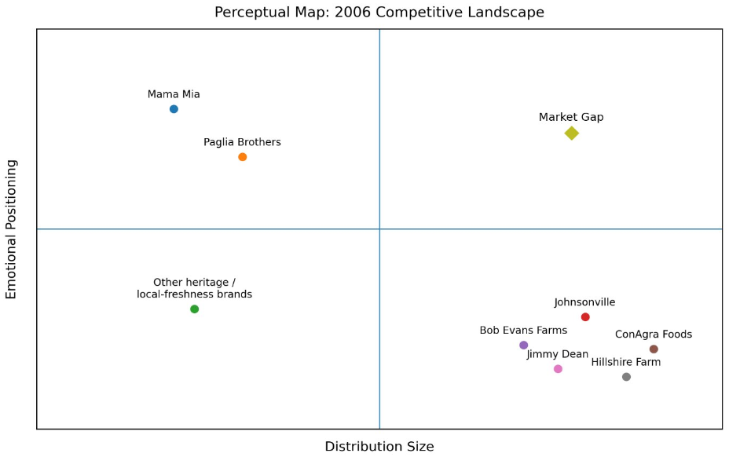

The set
Six pieces · One insight




Brand strategy you can actually see. I took a dense 2006 perceptual map and reimagined the whole competitive landscape as a six-piece art set, plus an Instagram carousel.

Overview
My capstone started as pure strategy: research, a competitive audit, and a 2006 perceptual map that plotted every player against the market and exposed the gap worth owning.
But a chart only works if people can read it. Not everyone thinks in axes and data points, so I translated the entire analysis into a six-piece art set, the same insight, made for the visual learners who feel a picture faster than they parse a graph.
The set
Six pieces · One insight



The Challenge
This is where I started: a classic perceptual map. It's sharp, but it asks every viewer to read axes, decode dots, and trust the analysis. Powerful for data people, easy to glaze over for everyone else.
My role: I ran the research and competitive mapping, then designed the six visual pieces myself, turning the same findings into art so the strategy lands whether you read charts or not.

Creative Process
"Strategy is just taste with a reason. This is where mine starts."
Julia HantlaOutcome
A full arc from raw research to finished art, proof that I can do the strategic thinking and then make it legible, beautiful, and built to share.